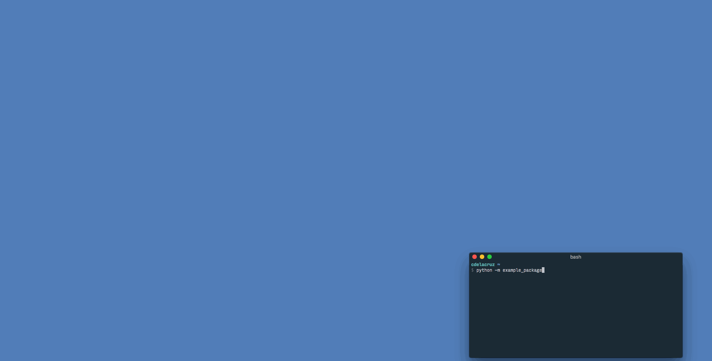

Example Project¶
Contents
A quick example test project using webdriver_test_tools. Source code for the
example project can be found here.
Initialize the project¶
First, create a directory for the test project:
mkdir example-project
cd example-project
Once in the project directory, run the following command to initialize the project:
wtt init
You will be prompted to enter a name for the test project python package. To be
a valid package name, it needs to only use alphanumeric characters and
underscores and it cannot start with a number. For this example, we’ll call it
example_package:
Enter a name for the test package
(use only alphanumeric characters and underscores. Cannot start with a number)
> Package name: example_package
(Optional) Enter a human-readable name for the test project
(can use alphanumeric characters, spaces, hyphens, and underscores)
> Project title [example_package]: Example Test Project
Create .gitignore files for project root and log directory?
(Ignores python cache files, package install files, local driver logs, etc)
> Create .gitignore files (y/n) [y]:
Generate README file?
(README contains information on command line usage and directory structure)
> Create README file (y/n) [y]:
Creating test project...
Project initialized.
To get started, set the SITE_URL for the project in example_package/config/site.py
Initializing the project should create the following files and directories:
example-project/
├── README.rst
├── example_package/
│ ├── __init__.py
│ ├── __main__.py
│ ├── config/
│ │ ├── __init__.py
│ │ ├── browser.py
│ │ ├── browserstack.py
│ │ ├── site.py
│ │ ├── test.py
│ │ └── webdriver.py
│ ├── data/
│ │ └── __init__.py
│ ├── log/
│ ├── pages/
│ │ └── __init__.py
│ ├── screenshot/
│ └── tests/
│ └── __init__.py
└── setup.py
After initializing the test project, run:
pip install -e .
Installing with the -e flag will update the package automatically when
changes are made to the source code.
Configure site URLs¶
After initializing a project, the URL of the site to be tested will need to be
configured. In example_package/config/site.py, set the SITE_URL and
BASE_URL of the SiteConfig class.
For this example, we’ll use example.com.
from webdriver_test_tools.config import site
class SiteConfig(site.SiteConfig):
"""URL configurations for a site
:var SiteConfig.SITE_URL: URL of the home page
:var SiteConfig.BASE_URL: Base URL for site pages (followed by a '/')
"""
SITE_URL = 'https://example.com'
BASE_URL = SITE_URL + '/'
# DECLARE ANY OTHER URL VARIABLES NEEDED FOR TESTING HERE
We’ll be testing that clicking a link takes us to an external page, so we’ll add
another variable INFO_URL to SiteConfig:
from webdriver_test_tools.config import site
class SiteConfig(site.SiteConfig):
"""URL configurations for a site
:var SiteConfig.SITE_URL: URL of the home page
:var SiteConfig.BASE_URL: Base URL for site pages (followed by a '/')
"""
SITE_URL = 'https://example.com'
BASE_URL = SITE_URL + '/'
# DECLARE ANY OTHER URL VARIABLES NEEDED FOR TESTING HERE
# URL linked to by the 'More Information' link on example.com
INFO_URL = 'https://www.iana.org/domains/reserved'
Add a page object¶
Creating a new page object module¶
This test framework is best used with the Page Object Model. Interaction with the page should be handled by page objects to minimize the need to alter tests whenever the HTML is changed.
After configuring URLs, we’ll want to add a page object for the home page of example.com. Run the following command to create a new page object module:
python -m example_package new page home HomePage
This will create the file pages/home.py with a page object class
HomePage.
Locating page elements¶
For any element we need to locate, we’ll want to keep track of how to target it
in the Locator subclass. Selenium WebDriver locators are tuples in the
format (By.<selection type>, <selection string>), where <selection type>
is one of the constants declared in selenium.webdriver.common.by.By and
<selection string> is the string used to find the element.
Example.com is a pretty bare bones website, so these examples will be pretty contrived. We’ll add locators for the site heading and the ‘More information…’ link.
To locate the ‘More information…’ link, we’re going to select it by its link
text. Add HEADING and INFO_LINK variables to the Locator subclass:
class HomePage(BasePage):
class Locator:
"""WebDriver locator tuples for any elements that will need to be accessed by
this page object.
"""
HEADING = (By.TAG_NAME, 'h1')
INFO_LINK = locate.by_element_text('More information', 'a')
The utility function locate.by_element_text() returns an XPATH locator for
elements with the specified text.
Interacting with page elements¶
For our example tests, we’ll want to look at the heading text and click on the
‘More information…’ link. Add the following functions to the HomePage class:
class HomePage(BasePage):
class Locator:
"""WebDriver locator tuples for any elements that will need to be accessed by
this page object.
"""
HEADING = (By.TAG_NAME, 'h1')
INFO_LINK = locate.by_element_text('More information', 'a')
# Page Methods
def get_heading_text(self):
heading_element = self.find_element(self.Locator.HEADING)
return heading_element.text
def click_more_information_link(self):
link_element = self.find_element(self.Locator.INFO_LINK)
link_element.click()
The BasePage method self.find_element(locator) is shorthand for
self.driver.find_element(*locator).
Add a test¶
Creating a new test module¶
Now that we have a page object for interacting with example.com, we can write a test case. Run the following command to create a new test module:
python -m example_package new test home HomePageTestCase -d "Really contrived example test case"
This will create the file tests/home.py with a test case class
HomePageTestCase. The -d argument is used to add a description to the
test case’s docstring.
In tests/home.py, import the HomePage class created in the previous step.
from selenium import webdriver
import webdriver_test_tools
from webdriver_test_tools.testcase import *
from example_package import config
from example_package.pages.home import HomePage
class HomePageTestCase(WebDriverTestCase):
"""Really contrived example test case"""
Note
As of webdriver_test_tools version 1.7, the tests subpackage
automatically detects new test modules. For test projects created prior to
1.7, new test modules need to be imported manually in tests/__init__.py.
Adding test functions¶
We’re going to add 2 test functions:
- Retrieve the heading text and assert that it says ‘Example Domain’
- Click the ‘More information…’ link and assert that the URL matches
SiteConfig.INFO_URL
class HomePageTestCase(WebDriverTestCase):
"""Really contrived example test case"""
# URL to go to at the start of each test
SITE_URL = config.SiteConfig.SITE_URL
# Test Methods
def test_page_heading(self):
"""Ensure that the page heading text is correct"""
page_object = HomePage(self.driver)
heading_text = page_object.get_heading_text()
self.assertEqual('Example Domain', heading_text)
def test_more_information_link(self):
"""Test that the 'More information...' link goes to the correct URL"""
page_object = HomePage(self.driver)
expected_url = config.SiteConfig.INFO_URL
page_object.click_more_information_link()
self.assertUrlChange(expected_url)
Note
Test functions need to begin with the prefix test_ in order for
the python unittest library to recognize them as tests.
The method WebDriverTestCase.assertUrlChange() tests that the current URL
matches the URL given as a parameter, (waiting a few seconds for the page to
load before reporting a failure). The WebDriverTestCase class includes a
number of additional assertion methods for WebDriver testing. For more
information, see the list of WebDriverTestCase assertion methods.
We should now have everything we need to run our test suite. To verify that the framework is able to detect the tests, run:
python -m example_package list
This prints a list of test cases and their test methods in the package. The output should look like this:
HomePageTestCase:
test_more_information_link
test_page_heading
Run the tests¶
Running the test suite¶
To run our test suite:
python -m example_package
This will generate new test case classes for Chrome and Firefox based on the test case classes we wrote and run them. If all tests pass, the output should look like this:
(Firefox) Really contrived example test case
Test that the 'More information...' link goes to the correct URL ... ok
Ensure that the page heading text is correct ... ok
(Chrome) Really contrived example test case
Test that the 'More information...' link goes to the correct URL ... ok
Ensure that the page heading text is correct ... ok
----------------------------------------------------------------------
Ran 4 tests in 15.436s
OK
Optional command line arguments¶
Test packages can be run with various optional arguments to run a limited set of test cases instead of running the entire suite. To see a list of command line arguments, run:
python -m example_package run --help
Running in a specific browser¶
If we just wanted to run the tests in a specific browser, we can use the
--browser command line argument. For example, if we only wanted to run
Firefox test cases:
python -m example_package --browser firefox
Running specific test modules¶
If we only want to run a specific test module, we can use the --module
command line argument. For example, if we just wanted to run
tests/home.py:
python -m example_package --module home
Since we only have one test module in this example, this doesn’t do anything different than normal, but this can be useful in test projects with multiple test modules.
Running specific test cases or functions¶
If we only want to run a specific test case or function within a test case, we
can use the --test command line argument. For example, if we just wanted to
run HomePageTestCase:
python -m example_package --test HomePageTestCase
Since we only have one test case class in this example, this doesn’t do anything different than normal, but this can be useful in test projects with multiple cases.
If we just wanted to run the test_more_information_link function:
python -m example_package --test HomePageTestCase.test_more_information_link
Skipping test cases or functions¶
If we wanted to skip a test case or function within a test case, we can use the
--skip command line argument, which uses the same syntax as --test. For
example, if we wanted to run all tests except for the
test_more_information_link function:
python -m example_package --skip HomePageTestCase.test_more_information_link
Again, this isn’t particularly interesting since we only have 2 test functions, but can be useful in larger test projects.
Running tests in headless browsers¶
Some browsers support headless execution. This allows tests to be run without the browser GUI, which improves performance. To run the example test suite in headless browsers:
python -m example_package --headless
For more information and a list of compatible browsers, see headless browsers documentation.
Running tests silently¶
By default, detailed output is displayed when running tests. If we wanted to reduce the output to just a progress bar and the final results while running tests:
python -m example_package --verbosity 1
To suppress output entirely and just get the final results:
python -m example_package --verbosity 0